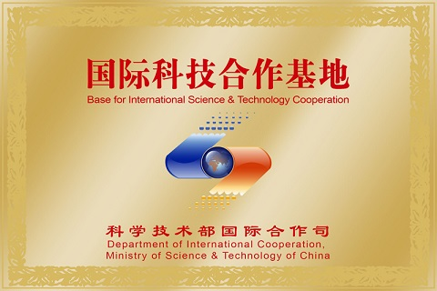

 “大数据智能计算示范型国家国际科技合作基地”和“重庆市大数据协同创新中心”依托计算机学院和计算智能重庆市重点实验室进行建设，近年来围绕大数据智能计算关键技术研发、信息安全行业大数据、医疗健康行业大数据、生态环境行业大数据、工业制造行业大数据、文化教育行业大数据等多个研究方向领域开展了深入广泛的研究工作，并取得一系列代表性研究成果。 2011年起，重邮计算机学院开始与奇虎科技、腾讯、重庆市公安局等企事业单位和科研院所在大数据安全、移动互联网大数据等行业领域开展项目合作，与美国康奈尔大学、新加坡国立大学、韩国仁荷大学、加拿大里贾纳大学、中南大学、中国科学技术大学、重庆大学等国内外知名高校在大数据智能计算、大数据知识工程等应用基础研究领域开展项目合作，推动了CCF大数据专委会、重庆市云计算和大数据产业协会的成立。 2013年，重邮计算机学院联合奇虎科技、国家卫生计生委科学技术研究所、重庆市环境科学研究院、中南大学、中国科学技术大学、重庆大学、加拿大里贾纳大学等国内外知名高校、科研院所和骨干企业，依托2个国家级重点学科和2个省部级重点学科、2个国家级科研基地和7个省部级科研基地的创新能力，在多年合作的基础上，优势互补，启动了重庆市“大数据协同创新中心”的建设工作，并于2017年6月成功获批为“重庆市2011协同创新中心”。
重庆邮电大学计算机学院作为牵头建设单位，于2016年成功申报并获批为“大数据智能计算示范型国家国际科技合作基地”，于2017年6月成功获批为“重庆市大数据协同创新中心”。在重庆邮电大学校内建设了4000平米核心研发区，筹措建设及运营经费5000余万元。运行以来，承担国家重大科研任务5项，新增国家级研发基地1个、省部级研发基地4个、国家级人才2人、省部级人才3人、一级学科博士点1个、博士后流动工作站1个，获重庆市科技成果一等奖2项。
| 序号 | 项目来源 | 项目名称 | 依托单位 | 起止时间 |
| 1 | 国家重点研发计划 | 大数据知识工程基础理论及其应用研究 | 合肥工业大学 中国科学技术大学 重庆邮电大学等 |
2016-2020 |
| 2 | 国家重点研发计划 | *****保密项目 | 重庆邮电大学 华中科技大学 北京奇虎科技有限公司等 |
2017-2020 |
| 3 | 国家重点研发计划 | 异构身份联盟监管及基础理论研究 | 电子科技大学 北京邮电大学 重庆邮电大学等 |
2017-2020 | 4 | 国家自然科学基金 | 大数据复杂任务的多粒度分解与联合问题求解机制研究 | 重庆邮电大学 | 2016-2019 |
| 5 | 国家自然科学基金 | 三支决策聚类理论模型与方法研究 | 重庆邮电大学 | 2014-2017 |
| 6 | 国家自然科学基金 | 大数据中的多粒度知识发现模型与方法研究 | 重庆邮电大学 | 2014-2017 |